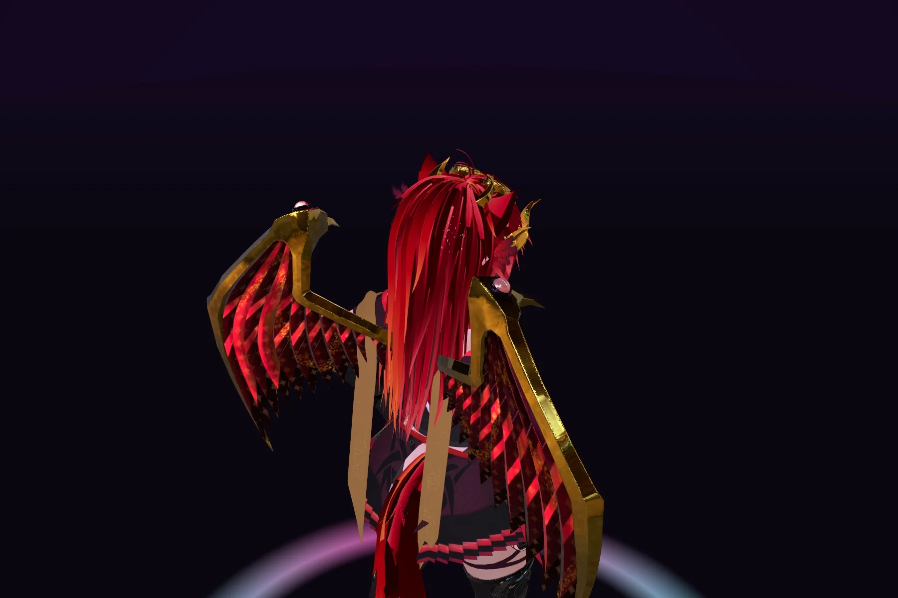

The whole tool in three minutes.
Four steps, one window.
Wings, hair, horns, gold.


Safe by design.
Saves a new PNG and material. Originals never change.
Nothing added to your uploaded avatar.
Undo any step.
Textures
Hair_color.pngstays as it was
Hair_color_ats.pngthe new PNGHair_ats.mata copy of the materialHair_color_ats_recipe.assetyour layers, to keep editing later
Your avatar. Your colours.
VCC did not open? The Download page has the listing URL and the other ways to install.
- Does it work with Poiyomi and lilToon?
- Yes. Selecting and painting work on any shader.
- Is it free?
- Yes. It is free and open source (MIT).
Learn together on Discord
Ask questions, show your looks and learn a little more about textures. Others can learn from you too.